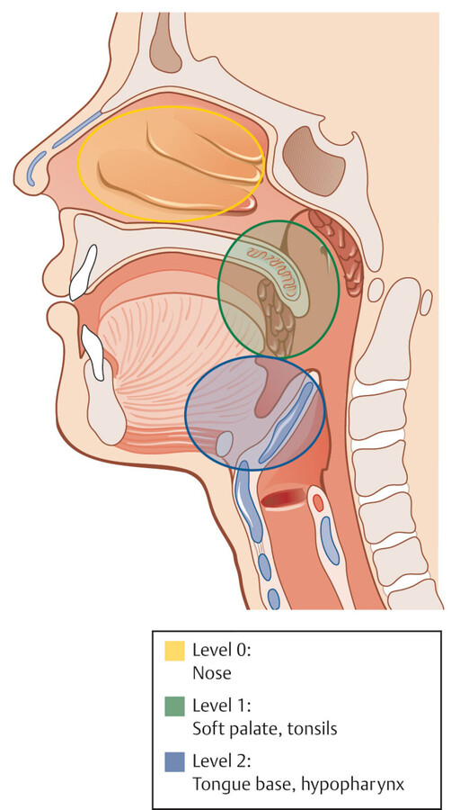
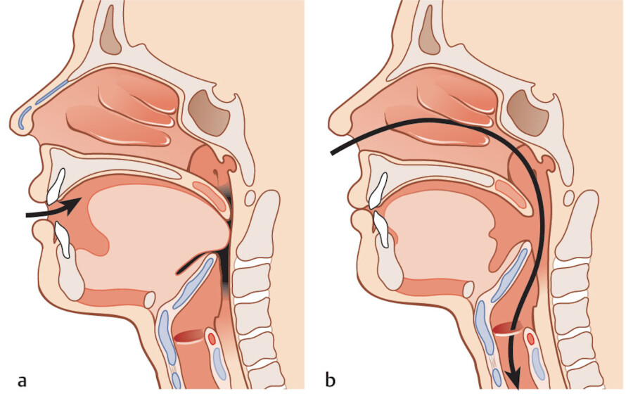

Ронхопатия и синдром обструктивного апноэ сна
Определение и классификация
Синонимы: первичный храп (доброкачественный, храп без остановки дыхания во время сна — неосложнённый), патологический храп (хронический, регулярный, привычный, храп с остановкой дыхания во время сна — осложнённый). Храп, ронхопатия (греч. ronchus — храпение, хрипы) — звуковой феномен, возникающий в результате вибрации орофарингеальных структур как на вдохе, так и при выдохе, является следствием изменения конфигурации (неполной обструкции) верхних дыхательных путей от носоглотки до гортанной части глотки. Звук, возникающий при храпе, имеет чёткие акустические характеристики, отличающие его от других дыхательных звуков. Храп является основным симптомом синдрома обструктивного апноэ/гипопноэ во сне (СОАГС) и характеризуется повторными эпизодами обструкции верхних дыхательных путей во время сна, приводящими к снижению уровня кислорода в крови, грубой фрагментации сна и избыточной дневной сонливости. Диагноз СОАГС может быть поставлен в случаях, когда эпизоды апноэ длятся не менее 10 с и возникают не реже чем 15 раз за один час. В Международной классификации болезней сна приведено 80 патологических состояний, а в МКБ-10 есть отдельная графа — апноэ сна G47.3. по: Нац. руководство, 2016, с. 890–891
В индустриальных странах, общество которых ориентировано на прагматизм, расстройство сна и отсутствие чувства удовлетворения от него представляет значительную социально-экономическую проблему. Эта проблема комплексная. В Международной классификации нарушений сна, которая подверглась пересмотру (ICSD-R — International Classification of Sleep Disorders, Revised), выделено более 80 видов таких нарушений. В настоящем разделе будут рассмотрены лишь обструктивные расстройства дыхания, ассоциированные со сном, патофизиологические механизмы которых коренятся в нарушении функции верхних дыхательных путей. По клиническим признакам причины таких расстройств можно разделить на три категории:
- Первичный храп (доброкачественный храп, храп без апноэ). Громкий храп может вызвать напряжённую обстановку в окружении пациента, не сказываясь отрицательно на физическом его состоянии.
- Синдром обструктивных апноэ во сне (СОАГС) встречается примерно у 4% мужчин и 2% женщин. Он характеризуется повторными эпизодами обструкции верхних дыхательных путей во время сна с прерыванием дыхательных движений и связан с обеднением периферической крови кислородом (десатурацией). Это повышает риск сердечно-сосудистых нарушений, таких как инсульт, инфаркт миокарда, гипертонический криз, атеросклероз, и смерти от них. Храп, выраженная дневная сонливость и резкое снижение функциональной активности — основные проявления СОАГС.
- Синдром резистентности верхних дыхательных путей представляет собой форму обструктивных расстройств дыхания во сне, при которой повторные эпизоды повышения сопротивления потоку воздуха в верхних дыхательных путях вызывают короткие пробуждения от сна и связанную с этим дневную сонливость. Диагностировать синдром резистентности верхних дыхательных путей трудно; в новой версии ICSD этот синдром отдельно не выделен, а рассматривается как проявление СОАГС.
по: Нац. руководство, 2016, с. 892
Точка зрения зарубежных авторов
Немецкое руководство определяет тяжесть по индексу апноэ-гипопноэ (ИАГ) — числу апноэ и гипопноэ за час сна: у взрослых синдром обструктивного апноэ сна диагностируют при ИАГ 15 и более или при ИАГ 5 и более в сочетании со значимыми сопутствующими заболеваниями; у детей — при ИАГ более 1 в сочетании с клиническими симптомами (храп, затруднённое дыхание во сне, дневная сонливость или гиперактивность, нарушения поведения и обучения); первичный храп — ИАГ менее 5 или менее 15 без значимых сопутствующих заболеваний. по: Behrbohm и соавт., разд. 3.3.10
Британские авторы определяют апноэ как полное прекращение потока воздуха (снижение сигнала носового потока более чем на 90% от исходного) не менее чем на 10 с, независимо от десатурации и пробуждения; определение гипопноэ в разных центрах различается. По ИАГ выделяют: норму — менее 5 в час; лёгкое обструктивное апноэ сна — от 5 до 15; среднетяжёлое — от 15 до 30; тяжёлое — 30 и более. Эти критерии не учитывают ни индекс десатурации, ни длительность эпизодов. по: Scott-Brown, т. 3, гл. 74, с. 1066
Эпидемиология
Если СОАГС встречается у 26–73% пациентов, а в 95% случаев у пациентов с СОАГС встречается храп, то принято считать, что храп является его объективным симптомом. По другим данным, распространённость СОАГС велика и составляет 5–7% в популяции старше 30 лет, причём приблизительно треть таких пациентов имеет среднюю или тяжёлую степень заболевания. Чаще СОАГС страдают люди старше 40 лет, соотношение мужчин и женщин 8:1. У женщин СОАГС развивается после климактерического периода. У детей важным фактором риска СОАГС является затруднение носового дыхания, обусловленное гипертрофией аденоидных вегетаций и нёбных миндалин. В зависимости от их возраста и метода оценки (полисомнография, пульсоксиметрия, анкетирование и др.) частота СОАГС колеблется в пределах 1,6–9,7%. Есть работы, свидетельствующие о том, что по акустическому анализу храпа можно дифференцировать больных с синдромом обструктивного апноэ от пациентов, у которых привычный храп не сопровождается СОАГС. У больных с СОАГС мягкое нёбо вибрирует с частотой 1000–3000 Гц, а у пациентов с храпом без апноэ — 40–60 Гц. по: Нац. руководство, 2016, с. 891
Точка зрения зарубежных авторов
Британские авторы приводят по Висконсинскому когортному исследованию 4% мужчин и 2% женщин с обструктивным апноэ сна и дневной сонливостью; с тех пор распространённость растёт вместе с ожирением: обструктивное апноэ находят у 75% людей с индексом массы тела выше 40 кг/м². Обструктивное апноэ сна — независимый фактор риска артериальной гипертензии, сердечно-сосудистых и цереброваскулярных заболеваний, сахарного диабета 2-го типа; дневная сонливость повышает риск дорожно-транспортных происшествий. Привычный храп встречается у 12% детей, обструктивное апноэ сна — у 0,7–1,8%. по: Scott-Brown, т. 3, гл. 74, с. 1061–1062; т. 2, гл. 27, с. 294
Этиология и патогенез
Основное место обструкции соответствует сегменту, расположенному между хоанами и гортанью. Этот сегмент открывается для воздушного потока только благодаря функции произвольных мышц. По мере углубления сна мышечный тонус снижается, что у пациентов, страдающих обструктивными апноэ во сне, вызывает дисбаланс между вакуумом, образующимся при вдохе (засасывающий эффект), и мышечным тонусом. Происходящее при этом спадение дыхательных путей усугубляется давлением, оказываемым мягкими тканями, окружающими дыхательные пути. Последний фактор в значительной степени определяется отложением жира у тучных лиц или анатомическими особенностями, например гиперплазией нёбных миндалин, мягкого нёба или корня языка. Учитывая значительное количество людей с избыточной массой тела, ожирение считают основным из кофакторов в патогенезе СОАГС.
С позиций оториноларинголога наиважнейшим представляется патогенетическая роль затруднённого носового дыхания в развитии храпа и СОАГС. Так, около 50% больных, страдающих от храпа, жалуются и на затруднённое носовое дыхание, в то время как в общей популяции этот показатель составляет лишь 14%. С другой стороны, 2/3 пациентов с искривлением перегородки носа храпят во сне в отличие от 1/4 лиц в ринологически здоровой популяции.
К обструкции верхних дыхательных путей во время сна могут привести патологические состояния, с которыми сталкивается оториноларинголог. К ним можно отнести искривление перегородки носа, гипертрофию носовых раковин, хронический полипозный риносинусит и др. Расстройства сна и нарушения дыхания во сне могут являться результатом органических изменений и функциональных нарушений определённых структур организма, развивающихся при ряде заболеваний ЦНС (болезнь Паркинсона, эпилепсия, органические и дегенеративные заболевания головного мозга), болезнях внутренних органов (гастродуоденальный рефлюкс, хронические обструктивные заболевания лёгких) и при ряде психических расстройств (шизофрения, депрессия, алкоголизм и т. д.). Провоцирующими факторами являются также психогенные воздействия на организм, смена биологических ритмов, нередко обусловленные профессиональной деятельностью, положение на спине во время сна, при котором язык западает и смыкается с мягким нёбом.
После засыпания происходит постепенное расслабление мышц глотки. Один из очередных вдохов приводит к коллапсу дыхательных путей и остановке дыхания. Для восстановления проходимости дыхательных путей требуется активация мозга, который должен послать импульс к глоточной мускулатуре. После её сокращения и возобновления дыхания в организме восстанавливается нормальное содержание кислорода, мозг успокаивается и засыпает, но описанный цикл повторяется снова. Частые и длительные остановки дыхания обусловливают резкое снижение насыщения крови кислородом. При этом в первую очередь страдают органы, потребляющие наибольшее количество кислорода: мозг и сердце. Постоянные утренние головные боли являются проявлением ночной гипоксии мозга. При ишемической болезни сердца снижение насыщения крови кислородом может спровоцировать развитие опасных аритмий и инфаркта миокарда. Каждая остановка дыхания — это стресс для организма, сопровождающийся кратковременным повышением артериального давления до 200–250 мм рт. ст. Этим объясняется увеличение вероятности развития инсульта у данной категории больных. Описаны случаи смерти во время храпа во сне. Исследования показали, что нередко у храпящего человека во время сна развивается полная обструкция верхних дыхательных путей в области носа и глотки. по: Нац. руководство, 2016, с. 892–893
Для того чтобы вентиляция лёгких во время сна была нормальной, требуется координация трёх участвующих в процессе факторов:
- Нейроинспираторного импульса к дыхательным мышцам, включая мышцы самого верхнего отдела дыхательных путей.
- Свободной проходимости верхних дыхательных путей.
- Способности дыхательных мышц создать необходимое усилие вдоха, соразмерное с механическим сопротивлением грудной клетки и лёгких.
Нарушение любого из этих трёх факторов или их дискоординация приведёт к гиповентиляции или апноэ. по: Нац. руководство, 2016, с. 893–894
Известно, что существует зависимость между состоянием верхних дыхательных путей и патологическими проявлениями со стороны органов дыхания, пищеварения, сердечно-сосудистой и мочеполовой систем. Дело в том, что полость носа — это не только путь для движения вдыхаемого и выдыхаемого воздуха. Дыхательные пути, особенно слизистая оболочка, являются мощными рефлексогенными зонами, которые иннервируются ветвями тройничного и обонятельного нервов. В полости носа осуществляется регуляция объёма и скорости поступающего в лёгкие воздуха, насыщение кислородом крови и, следовательно, влияние на все органы и системы человека. Оториноларингологу важно определить причины затруднения носового дыхания, к которым можно отнести:
- Со стороны наружного носа и носоглотки — деформации наружного носа и его перегородки, хронические риниты, хронические воспалительные заболевания носа и околоносовых пазух, сумка Торнвальдта, гипертрофия тубарных валиков, утолщение в области задних отделов сошника в результате гипертрофии слизистой оболочки или наличия костной пневматизации.
- Со стороны глотки — дряблость мягкого нёба и его гипертрофия, увеличение аденоидных вегетаций и нёбных миндалин, утолщение нёбных дужек, увеличение длины нёбного язычка, гипертрофия язычной миндалины.
- Со стороны гортаноглотки — увеличение корня языка, пролапс надгортанника, смещение подъязычной кости, гиперпластические процессы в гортани.
При аномалиях строения или патологических процессах в полости носа направление воздушной струи делается ещё более турбулентным. Проходя ближе к дну полости носа, воздушная струя частично минует обонятельную зону с выключением её обонятельной функции. При вдохе создаётся дополнительное отрицательное, а при выдохе дополнительное положительное давление в глотке. Потоки воздуха одновременно через рот и нос (а нередко только через рот) вызывают вибрацию мягкого нёба, а возможно, и корня языка, лепестка надгортанника, стенок глотки и трахеи, что сопровождается звуковым эффектом — храпом. Затруднение носового дыхания приводит к изменению частоты дыхательных движений, увеличению дыхательных экскурсий. А полное выключение носового дыхания приводит к урежению дыхательных движений, удлинению вдоха, усилению экскурсий грудной клетки и диафрагмы, увеличению отрицательного внутритрахеального и внутриплеврального давления во время вдоха.
Во время сна контроль сознания за дыханием снижается, присоединяющееся ротовое дыхание ведёт к снижению мышечного тонуса глотки, особенно её дилататоров — m. genioglossus и m. geniohyoideus, провисанию мягкого нёба, особенно в положении на спине, что приводит к спадению просвета глотки, затрудняя и без того нарушенное дыхание. В возрасте после 60 лет отмечено снижение тонуса мягких тканей глотки, что усугубляет храп. Таким образом, очень важно выявить анатомическую предрасположенность со стороны полости рта, глотки и гортаноглотки у пациентов, страдающих храпом и СОАГС. Учёт характера особенностей, приводящих к сужению верхних дыхательных путей, позволит выбрать оптимальный способ лечения храпа и СОАГС и его осложнений у конкретно взятого пациента, что повысит вероятность положительного результата лечения. по: Нац. руководство, 2016, с. 895
Расслабление во время сна мускулатуры глотки, мягкого нёба и языка является основной причиной храпения (ронхопатии), которое обычно наблюдается у лиц с утолщенным мягким нёбом и удлиненным нёбным язычком, при отсутствии глоточного рефлекса и резком снижении тонуса мышц нёбного язычка и мягкого нёба, а также у лиц, употребляющих алкоголь и много курящих. Возникновению храпа способствует нарушение носового дыхания, например вследствие образования полипов носа, при аденоидах, искривлении перегородки носа, повышении массы тела у людей с короткой и толстой шеей и др. по: Пальчун, Магомедов, Лучихин, учебник, с. 245

Точка зрения зарубежных авторов
Немецкое руководство описывает тот же механизм: основное место обструкции — сегмент между хоанами и гортанью, который открыт только благодаря работе произвольных мышц; по мере углубления сна их тонус снижается, возникает дисбаланс между разрежением на вдохе и мышечным тонусом, а ожирение считают основным кофактором. по: Behrbohm и соавт., разд. 3.3.10
Британские авторы выделяют у детей две группы: классическую — с гипертрофией аденоидов и нёбных миндалин — и всё более частую группу детей с ожирением, у которых обструкция вызвана в основном сужением ротоглотки за счёт жировой ткани; высока частота обструктивного апноэ сна при синдромах Дауна и Тричера Коллинза, ахондроплазии, расщелине нёба, серповидноклеточной анемии. по: Scott-Brown, т. 2, гл. 27, с. 294, 298
Клиническая картина
Клинические проявления СОАГС достаточно разнообразны. В 95% случаев у пациентов с СОАГС имеется храп. Храп представляет собой феномен, возникающий при дрожании орофарингеальных структур со звуковой частотой, что является свидетельством наличия относительной слабости мускулатуры этой зоны. Часто люди, окружающие таких больных, отмечают, что храп прерывается периодами абсолютной тишины, после чего следует как бы «эпизод взрывного всхрапывания» и человек продолжает храпеть до следующего замолкания. Эти периоды молчания как раз и отражают имеющиеся в это время обструктивные остановки дыхания. Во время каждого из таких случаев происходит падение уровня насыщения крови кислородом. Известно, что нарушение аэродинамики в верхних дыхательных путях приводят к нарушению газообмена крови в лёгких. Основные клинические симптомы данного заболевания следующие:
- Громкий храп.
- Остановки дыхания во сне.
- Беспокойный сон.
- Учащённое ночное мочеиспускание.
- Ночные приступы удушья.
- Ночные поты.
- Утренняя головная боль.
- Снижение потенции.
- Бессонница.
- Повторные просыпания.
- Ночной кашель.
Для выявления остановок дыхания во сне проще всего понаблюдать за спящим. Обычно сразу после засыпания у больного появляется храп и вскоре внезапно останавливается дыхание. В это время не слышно дыхательных шумов, а храп прекращается. Однако больной пытается дышать, что видно по движениям грудной клетки и брюшной стенки. Примерно через 15–30 с человек громко всхрапывает и делает несколько глубоких вдохов и выдохов. Как правило, сон больного очень беспокоен: он вертится в постели, двигает руками и ногами, иногда что-то говорит. Частота и длительность остановок дыхания во сне зависит от тяжести заболевания. При тяжёлой форме болезни циклические остановки дыхания возникают почти сразу после засыпания и в любом положении тела. При менее тяжёлых формах это происходит только в глубоких стадиях сна или когда больной спит на спине. Нарушения дыхания часто связаны с приёмом алкоголя. Иногда храп и остановки дыхания возникают только после значительной дозы спиртного, принятой незадолго до сна. по: Нац. руководство, 2016, с. 894
Точка зрения зарубежных авторов
Британские авторы советуют собирать анамнез вместе с партнёром пациента: он описывает остановки дыхания, всхрапывания и пробуждения. Перечень симптомов: храп, утомляемость, замеченные окружающими остановки дыхания, всхрапывания и приступы удушья, избыточная дневная сонливость, прерывистый и не приносящий отдыха сон, снижение внимания, перепады настроения, никтурия. Обязательно расспрашивают о дорожно-транспортных происшествиях: у больных обструктивным апноэ сна их риск выше. На обструктивное апноэ указывают центральное ожирение (индекс массы тела более 28 кг/м²) и окружность шеи более 43 см; дневную сонливость оценивают по шкале сонливости Эпворта. По анамнезу и осмотру обструктивное апноэ сна удаётся предсказать лишь у половины больных. по: Scott-Brown, т. 3, гл. 74, с. 1062–1063
Диагностика
Диагноз основывается на типичных анамнестических данных, в том числе сведениях о количестве эпизодов засыпаний в дневное время, результатах клинического обследования и лабораторного исследования сна (индекс апноэ, гипопноэ и пробуждений). Этапы обследования пациентов:
- Сбор анамнеза, включая заполнение стандартного опросника лаборатории исследования сна.
- Физикальное обследование (ЭКГ, АД, функция внешнего дыхания, оториноларингологическое исследование).
- Определение параметров сердечно-сосудистой и дыхательной систем в ночное время без исследования сна (скрининг лиц с синдромом апноэ во сне).
- Полисомнография (измерение параметров сердечно-сосудистой и дыхательной систем в ночное время и параметров сна).
Лабораторные исследования
Биологические маркёры ронхопатии — количественно определяемые биологические параметры, такие как парциальное напряжение кислорода, углекислого газа, pH в артериальной крови, общий гемоглобин, эритроциты. Маркёры позволяют обнаружить хроническую гипоксемическую гипоксемию — признак нарушения газообменной функции лёгких; компенсацию гипоксемии гемическими факторами. по: Нац. руководство, 2016, с. 894–896
Инструментальные исследования
Оториноларингологическое обследование позволяет обнаружить причины обструкции дыхательных путей, определить степень проходимости и показатели аэродинамики. «Золотым стандартом» диагностики СОАГС является полисомнография, проводимая в отделениях медицины сна. При этом регистрируются следующие параметры:
- Электроэнцефалограмма (ЭЭГ).
- Электромиограмма (ЭМГ).
- Движение нижних конечностей.
- Электрокардиограмма (ЭКГ).
- Храп.
- Носо-ротовой поток воздуха.
- Дыхательные движения грудной клетки и брюшной стенки.
- Положение тела.
- Сатурация (SpO₂) — степень насыщения крови кислородом.
Кардиореспираторный мониторинг (КРМ) характеризуется тем, что регистрируются только дыхательные каналы, сатурация, пульс, ЭКГ. КРМ используется как самостоятельный метод диагностики нарушений сна во сне. Респираторный мониторинг применяется для скрининга пациентов с расстройствами дыхания во сне. Прибор регистрирует апноэ, гипопноэ, храп и сатурацию. Компьютерная пульсоксиметрия — метод длительного неинвазивного мониторинга насыщения гемоглобина артериальной крови кислородом — сатурации, позволяющий выявлять расстройства дыхания во сне при минимальных материальных и человеческих затратах. Холтеровское мониторирование ЭКГ и дыхания — многообещающее направление диагностики расстройства дыхания во сне, когда к классическим холтеровским мониторам добавлены каналы регистрации пневмограммы, сатурации и потока воздуха. На начало 2009 г. этот прибор не имел аналогов в мире. Регистрация одновременно 12 каналов ЭКГ и параметров дыхания во сне имеет большое практическое применение, так как позволяет чётко определить связь нарушений на ЭКГ с циклическими апноэ/гипопноэ. по: Нац. руководство, 2016, с. 896–897
Дифференциальная диагностика
Клиническая картина синдрома центрального апноэ сна (дыхание Чейна — Стокса — циклические остановки дыхания) близка с картиной СОАГС. В практическом плане важно дифференцировать указанные выше расстройства, так как они требуют различных лечебных подходов. При дифференциальной диагностике следует учитывать следующие признаки:
- Если при циклических апноэ/гипопноэ регистрируется храп, всегда следует предполагать наличие СОАГС.
- Если остановки дыхания регистрируются только в положении на спине, то, скорее всего, они носят обструктивно-зависимый характер, даже в том случае, когда нет явного храпа и дыхательных усилий в момент апноэ (это обусловлено западением языка и фарингеальным коллапсом с последующим торможением дыхательного центра).
- У пациентов с выраженным ожирением видимое отсутствие дыхательных движений во время апноэ не должно исключать обструктивный генез нарушений.
- «Чистое» дыхание Чейна — Стокса следует предполагать только в том случае, если остановки дыхания регистрируются в любом положении тела, при этом не отмечается дыхательных усилий, а в вентиляционную фазу полностью отсутствует храп.
- У пациентов с дыханием Чейна — Стокса часто можно отметить нестабильность дыхания с периодами гипер- и гипопноэ даже в состоянии бодрствования.
- Наличие у пациента тяжёлой сердечной недостаточности, инсультов или тяжёлых травм головы в анамнезе с большей вероятностью указывает на возможность дыхания Чейна — Стокса, хотя не исключает сопутствующего СОАГС.
- При возникновении каких-либо сомнений в диагнозе необходимо проведение полисомнографического исследования, а в ряде случаев пробного курса CPAP-терапии. CPAP-терапия полностью устраняет СОАГС, но практически не влияет на центральное апноэ сна (по Бузунову Р. В. и соавт., 2010).
Показаны консультации пульмонолога, терапевта, эндокринолога, кардиолога с целью оценки состояния дыхательных путей, сердечно-сосудистой системы, состояния обмена веществ и выявления метаболических, гормональных и эндокринных расстройств. Пример формулировки диагноза: синдром обструктивного апноэ сна, тяжёлой степени (позиционно-зависимая форма). Циклическая аритмовентрикулярная блокада II степени, связанная с нарушениями дыхания во сне. Ожирение III степени. Хронический тонзиллит, гипертрофия нёбных миндалин III степени. по: Нац. руководство, 2016, с. 897
Эталоном для диагностики дыхательных нарушений, связанных со сном, является метод полисомнографии. Полисомнография, наряду с многочасовой записью профиля сна (электроэнцефалография, электромиография и др.), одновременно позволяет фиксировать сердечный ритм, степень насыщения крови кислородом, характер дыхательных движений и др. Метод позволяет также получить данные о месте и уровне обструкции, степени сужения и дыхательном усилии. по: Пальчун и соавт., с. 260
Точка зрения зарубежных авторов
Британские авторы применяют три способа диагностики: ночную пульсоксиметрию на дому, многоканальное респираторное мониторирование на дому и полную полисомнографию в стационаре. При пульсоксиметрии значимым считают снижение сатурации на 4%; индекс десатурации более 15 в час подозрителен на обструктивное апноэ сна. Метод специфичен, но малочувствителен: отрицательный результат не исключает заболевания и требует многоканального исследования. Полисомнография со стационарным наблюдением нужна при сложных случаях — подозрении на синдром ожирения-гиповентиляции, нервно-мышечных заболеваниях, подборе давления CPAP. У детей «золотым стандартом» также служит полисомнография; при её недоступности используют ночную пульсоксиметрию. по: Scott-Brown, т. 3, гл. 74, с. 1063–1066; т. 2, гл. 27, с. 300
Профилактика и консервативное лечение
Профилактика ронхопатии включает общегигиенические мероприятия и оперативное лечение. Общегигиенические мероприятия:
- Снижение массы тела. При неосложнённом храпе достаточно уменьшить массу тела на 5–7% для того, чтобы полностью устранить храп.
- Прекращение или ограничение курения. Курение вызывает химическую травму дыхательных путей, что ведёт к её отёку и снижению тонуса мышц глотки.
- Исключение приёма алкоголя и снотворных препаратов. Алкоголь действует как миорелаксант, что приводит к расслаблению глоточной мышцы и спадению дыхательных путей. При тяжёлой форме СОАГС приём значительных доз алкоголя ведёт к риску летального исхода.
- Позиционное лечение. Пациент лёжа на боку может практически не храпеть.
- Применение электромеханических подбуживающих устройств — антихраповых систем.
- Применение фармакологических средств, облегчающих храп.
- Ситуационное облегчение носового дыхания, например назодилататорами.
- Применение внутриротовых приспособлений, предназначенных для смещения нижней челюсти кпереди для увеличения переднезаднего размера, ведёт к уменьшению храпа.
- Тренировка мышц языка и нижней челюсти. Если мышцы языка, нижней челюсти и глотки тренированы, то во сне они поддерживают определённый тонус, обеспечивая просвет глотки и уменьшение храпа.
Цель лечения устанавливают с учётом жалоб пациента, анамнеза, антропометрических данных, клинико-эндоскопических особенностей, оценки функции ВДП, наличия сопутствующей симптоматики и результатов полисомнографического исследования. От этих факторов зависит тактика лечения, которая может быть направлена либо на устранение дыхательных нарушений, либо на коррекцию расстройств сна. Существуют консервативные и хирургические методы лечения храпа и СОАГС. Методы консервативного лечения могут улучшить общее состояние больного, снизить выраженность храпа и проявлений СОАГС, если они будут направлены на устранение факторов риска. К ним относятся: снижение массы тела; прекращение или ограничение курения; исключение приёма алкоголя и снотворных препаратов; позиционное лечение; применение электромеханических подбуживающих устройств; ситуационное облегчение носового дыхания; применение внутриротовых приспособлений; тренировка мышц языка и нижней челюсти; CPAP-терапия (англ. continuous — постоянное, positive — положительное, airways — воздухоносные пути, pressure — давление). по: Нац. руководство, 2016, с. 891–892, 898
У пациента с жалобами на храп с синдромом апноэ необходимо учитывать факторы, которые могут усиливать респираторные нарушения, связанные со сном. Прежде чем решать вопрос об операции, пациентам должны быть рекомендованы следующие меры:
- Снижение массы тела (предпочтительно под руководством диетолога).
- Отказ от курения (курение вызывает раздражение слизистой дыхательных путей, что усиливает отек и способствует выработке повышенного количества слюны).
- Исключение использования миорелаксантов, бензодиазепинов, барбитуратов, антидепрессантов и др. препаратов, оказывающих расслабляющий эффект на мускулатуру дыхательных путей.
- Отказ от злоупотребления алкоголем перед сном, так как алкоголь обладает миорелаксирующим эффектом.
Для лечения обструктивного апноэ сна применяют также метод спонтанной вентиляции с положительным давлением на выдохе (continuous positive airway pressure). При помощи носовой маски, присоединяемой к компрессору, создается продолжительное позитивное давление воздуха на уровне верхних дыхательных путей, что позволяет расширять глотку и избежать её коллабирования. по: Пальчун и соавт., с. 260, 262

Точка зрения зарубежных авторов
Немецкие авторы подчёркивают, что эффективного лекарственного лечения ни синдрома обструктивного апноэ сна, ни первичного храпа пока нет. Принцип CPAP-терапии — пневматическая поддержка верхних дыхательных путей постоянным положительным давлением; первоначальный успех близок к 100%, однако 30–40% больных затем прекращают лечение из-за побочных эффектов. Внутриротовые устройства, выдвигающие нижнюю челюсть вперёд, эффективны примерно у 70% больных с лёгкой формой. по: Behrbohm и соавт., разд. 3.3.10
Британские авторы считают CPAP-терапию основным методом лечения обструктивного апноэ сна; её действие сравнивают с «пневматической шиной», не дающей спадаться стенкам глотки и нёбу. Лёгкое обструктивное апноэ без дневной сонливости и сопутствующих заболеваний большинство центров CPAP не лечит: рекомендуют снижение массы тела и лечение ринита. Внутриротовые шины, выдвигающие нижнюю челюсть, смещают корень языка вперёд; их побочные эффекты — слюнотечение, сухость во рту, боль в височно-нижнечелюстном суставе, изменение прикуса; приверженность лечению — 50–75%. У детей с лёгким и среднетяжёлым обструктивным апноэ интраназальные глюкокортикостероиды снижают ИАГ. по: Scott-Brown, т. 3, гл. 74, с. 1066–1068; гл. 75, с. 1074; т. 2, гл. 27, с. 300
Хирургическое лечение
Среднетяжёлые и тяжёлые формы СОАГС следует рассматривать как абсолютное показание к устранению носовой обструкции (искривление перегородки носа, гипертрофия носовых раковин, аденоидные вегетации II–III степени, гипертрофия нёбных миндалин и др.). При тяжёлых формах СОАГС у больных с ожирением улучшение наблюдается у 20–30% оперированных лиц. Решение о хирургическом лечении храпа и СОАГС принимается высококвалифицированным специалистом с учётом данных клинического осмотра, результатов полисомнографии и других дополнительных методов обследования. Селективное оперативное вмешательство на нёбе при лечении храпа и СОАГС подразумевает такие методики, как хирургическое вмешательство (например, шейвера), радиоволновое вмешательство, лазер и инъекционные методы. В результате такого воздействия ранозаживление приводит к склерозированию тканей, уменьшению в объёме и уплотнению мягкого нёба. Ткани мягкого нёба становятся тугоподвижными, и устраняется или уменьшается проявление храпа (биение мягкого нёба о стенки дыхательных путей).
Целью хирургического вмешательства в полости носа и околоносовых пазухах является полноценное восстановление свободного носового дыхания, что приводит к улучшению качества сна. Уменьшение храпа достигается примерно у 40% пациентов, получить стойкого излечения от СОАГС не удаётся ни у одного больного. Выполнением сочетанной тонзиллэктомии и аденотомии у детей можно достичь стойкого положительного эффекта от лечения СОАГС у детей в 85–90% случаев.
Хирургические вмешательства на нёбной миндалине (второй уровень): у детей наиболее частой причиной СОАГС является гипертрофия нёбных миндалин и аденоидных вегетаций. У взрослых пациентов гипертрофия нёбных миндалин наблюдается реже. Тонзиллэктомия является вмешательством на уровне мягкого нёба и обеспечивает увеличение пространства верхних дыхательных путей, поэтому к ней нередко прибегают при лечении СОАГС. Хирургические вмешательства на мягком нёбе (второй уровень): часто тонзиллэктомию выполняют в сочетании с увулопалатофарингопластикой. Суть операции состоит в иссечении избыточной слизистой оболочки со щажением мышц (обычная операция), и смещении кпереди нёбно-глоточной дуги наложением швов. Операция вызывает улучшение у 50% больных с СОАГС и у 70% больных первичным храпом. При первичном храпе и лёгкой форме СОАГС в качестве альтернативы можно выполнить радиочастотную абляцию тканей мягкого нёба, вызывая «дозированную» деструкцию мягких тканей с помощью игольчатых электродов, что приводит к сокращению мягкого нёба и его уплотнению.
Хирургические вмешательства на языке (третий уровень): радиочастотное воздействие на корень языка при лёгком и умеренно выраженном СОАГС (излечение достигается в 33% случаев); подвешивание подъязычной кости, т. е. фиксация её к щитовидному хрящу или нижней челюсти, приводящая к смещению её вперёд и увеличению позадиязычного пространства для прохождения потока воздуха; удаление язычной миндалины с помощью лазера или радиоволновой энергии. Хирургические вмешательства в полости рта: максилломандибулярная транспозиция путём остеотомии эффективна у 90% оперированных больных. Операция состоит в смещении вперёд верхней и нижней челюсти и увеличении тем самым пространства для прохождения воздушного потока, особенно у лиц с аномалиями развития челюстей. по: Нац. руководство, 2016, с. 892, 898–899
Оперативное лечение ронхопатии направлено также на коррекцию внутриносовых структур, носо- и ротоглотки с целью восстановления проходимости дыхательных путей и воздействия на область мягкого нёба или корня языка:
- Септопластика.
- Пластика носовых раковин.
- Тонзиллэктомия.
- Аденотомия.
- Полисинусотомия.
- Полипотомия.
по: Нац. руководство, 2016, с. 899
Таблица 1. Хирургическое лечение храпа и СОАГС по уровням обструкции (по тексту национального руководства, с. 898–899)
| Уровень | Вмешательство | Результат по данным руководства |
|---|---|---|
| Нос и околоносовые пазухи | Септопластика, пластика носовых раковин, полисинусотомия, полипотомия — восстановление свободного носового дыхания | Уменьшение храпа примерно у 40% пациентов; стойкого излечения от СОАГС не удаётся получить ни у одного больного |
| Носоглотка и нёбные миндалины у детей | Сочетанная тонзиллэктомия и аденотомия | Стойкий эффект при СОАГС в 85–90% случаев |
| Мягкое нёбо (второй уровень) | Тонзиллэктомия, увулопалатофарингопластика; при первичном храпе и лёгком СОАГС — радиочастотная абляция мягкого нёба | Улучшение у 50% больных с СОАГС и у 70% больных первичным храпом |
| Язык (третий уровень) | Радиочастотное воздействие на корень языка; подвешивание подъязычной кости; удаление язычной миндалины лазером или радиоволновой энергией | Излечение в 33% случаев при лёгком и умеренно выраженном СОАГС (радиочастотное воздействие) |
| Челюсти | Максилломандибулярная транспозиция путём остеотомии | Эффективна у 90% оперированных |
Увулопалатофарингопластика в руководстве Пальчуна и соавт.
Так обозначается хирургическая коррекция мягкого нёба, язычка, нёбных дужек, заднебоковой стенки глотки при ронхопатии. Как правило, это оперативное вмешательство применяется при так называемых «респираторных нарушениях, связанных со сном». Наиболее частым проявлением этих нарушений является храп и обструктивное апноэ во время сна (ОАС). Апноэ — это прекращение поступления воздуха через нос и рот, длящееся не менее 10 с. Основными симптомами ОАС является громкий храп во время сна, повышенная сонливость в течение дня. Кроме того, пациента вследствие длительной гипоксии может беспокоить головная боль по утрам, тревожность, раздражительность, отмечаются трудности концентрации внимания, нарушение памяти, снижение либидо и т. д. С синдромом ОАС могут быть связаны также артериальная гипертензия, нарушения сердечного ритма, ночная стенокардия.
При отсутствии результата от консервативных мер рекомендуется хирургическая коррекция анатомии структур, участвующих в формировании звукового феномена, — различные варианты увулопалатофарингопластики. Анестезия — эндотрахеальный наркоз или местная инфильтрационная анестезия. В 1981 г. S. Fujita предложил классификацию анатомических аномалий в глотке и ввел в практику новую операцию по их коррекции, направленную на увеличение воздушного пространства в глотке, названную «увулопалатофарингопластикой». Принцип операции заключается в удалении нёбных миндалин при их гипертрофии, сшивании нёбных дужек, иссечении нёбного язычка с частью мягкого нёба. При нарушении носового дыхания хирургическое вмешательство проводят одномоментно с реконструкцией внутриносовых структур. В тех случаях когда сужение верхних дыхательных путей происходит за счет нёбно-язычной, нёбно-глоточной дужек или нёбного язычка, оперативное вмешательство ограничивается увулопалатопластикой (без удаления миндалин).
Техника операции (увулопалатопластика). С помощью остроконечного скальпеля и ножниц производят удаление гиперплазированных дужек, чаще всего задних, одним блоком с частью мягкого нёба и язычка. Линия разреза проводится на расстоянии 1–1,5 см от свисающего края мягкого нёба, которое удаляют одним блоком с язычком и задними дужками. В некоторых вариантах операцию можно сочетать с нанесением вертикальных насечек на участки слизистой оболочки по ее свободному краю. Могут быть различные варианты операции. Наряду с задними удаляют передние дужки и нёбные миндалины. На остатки нёбных дужек, захватывая и нишу миндалин, накладывают швы. Наложение швов на раневую поверхность является обязательным. Эта манипуляция способствует увеличению просвета дыхательных путей и является мерой профилактики образования грубых послеоперационных рубцов. Как правило, пластику в области глотки сочетают с хирургической коррекцией внутриносовых структур.
Кроме вышеуказанного метода, с успехом используют повторные сеансы радиочастотной палатопластики с температурным контролем (сомнопластика). Это лечение подразумевает повторные селективные подслизистые коагуляции на уровне мягкого нёба и язычка. Спецификой этой хирургической техники является контроль температуры тканей с помощью термопары, встроенной в коагуляционную иглу, что позволяет регулировать количество освобождаемой энергии. Лазерная увулопалатофарингопластика является альтернативой классической. Этот метод ведет к формированию раневого рубца, оттесняющего мягкое нёбо кверху. Для достижения желаемого результата необходимо в среднем 5 сеансов. В редких случаях причиной развития апноэ может быть патологическое увеличение языка. Хирургическое вмешательство включает срединную глоссэктомию, состоящую в удалении части языка. Опыт проведения таких операций ограничен. по: Пальчун и соавт., с. 259–262
Точка зрения зарубежных авторов
Немецкое руководство приводит те же уровни операций, но для увулопалатофарингопластики указывает тенденцию к улучшению более чем у 60% больных с синдромом обструктивного апноэ сна и стойкое улучшение более чем у 70% больных первичным храпом. Перед операцией помогает эндоскопия во сне, вызванном седацией: она показывает уровень, характер и степень спадения дыхательных путей. Среди новых методов — стимуляция подъязычного нерва имплантируемым генератором импульсов. по: Behrbohm и соавт., разд. 3.3.10
Британские авторы приводят для классической увулопалатофарингопластики ранний успех 76% и отдалённый лишь 45% при низкой удовлетворённости больных; в многоцентровом исследовании серьёзные осложнения составили 1,5%, летальность — 0,2%; самое частое позднее осложнение — велофарингеальная недостаточность (28,5%), возможны также кровотечение (0–6%), сухость в глотке (10%), инфекция (0–10%), нарушения глотания (0–9%). После лазерной увулопалатопластики боль сильнее, чем после классической операции, ранний успех 79%, отдалённый — 55%. Радиочастотная абляция мягкого нёба и корня языка выполнима под местной анестезией и менее болезненна. При тяжёлом апноэ с обструкцией на уровне гортаноглотки и неэффективности CPAP применяют трансоральную роботизированную хирургию корня языка. Перед операцией британские авторы советуют эндоскопию во сне, вызванном седацией. У детей с полисомнографически подтверждённым апноэ раннюю аденотонзиллэктомию изучали в рандомизированном исследовании CHAT (464 ребёнка 5–9 лет). по: Scott-Brown, т. 3, гл. 75, с. 1074–1078; т. 2, гл. 27, с. 300–301
Дальнейшее ведение и прогноз
Рекомендации в послеоперационном периоде включают динамическое наблюдение за возможным прогрессирующим сужением просвета верхних дыхательных путей и нарастанием дыхательной недостаточности, контроль массы тела, исключение курения, соблюдение диеты, активный образ жизни, соблюдение режима сна, лечение сопутствующих заболеваний, ассоциированных с ронхопатией.
Следует отметить, что на сегодняшний день нет ни одного гарантированного метода лечения храпа и апноэ. Ронхопатия — многофакторное заболевание, и, значит, лечение должно носить многоплановый характер. Выбор методов лечения зависит от причины храпа и СОАГС, степени тяжести нарушений дыхания во сне. Важно вовремя выявлять пациентов с потенциально латентной патологией и назначать лечение, позволяющее предотвратить нежелательные последствия и улучшить качество жизни пациентов, страдающих ронхопатией и СОАГС. Срок общей нетрудоспособности больного составляет около 3 нед. по: Нац. руководство, 2016, с. 899
Источники
- Оториноларингология: национальное руководство / под ред. В. Т. Пальчуна. — 2-е изд., перераб. и доп. — М.: ГЭОТАР-Медиа, 2016. — Гл. 13, раздел «Ронхопатия» (Красножен В. Н.): с. 890–899.
- Пальчун В. Т., Магомедов М. М., Лучихин Л. А. Оториноларингология: учебник. — Гл. 3, раздел «Физиология глотки»: с. 245 (по нумерации электронного издания).
- Пальчун В. Т., Лучихин Л. А., Магомедов М. М. Руководство по практической оториноларингологии. — М.: Медицинское информационное агентство, 2010. — Гл. 3, раздел 3.2.3 «Увулопалатофарингопластика при ронхопатии»: с. 259–262.
- Behrbohm H., Kaschke O., Nawka T., Swift A. Ear, Nose, and Throat Diseases with Head and Neck Surgery. — Stuttgart: Thieme. — Разд. 3.3.10 «Obstructive Sleep-Related Breathing Disorders» (Verse T.), рис. 3.66, 3.67.
- Watkinson J. C., Clarke R. W. (eds.) Scott-Brown's Otorhinolaryngology, Head and Neck Surgery, 8th ed. — Boca Raton: CRC Press, 2018 (т. 2, гл. 27 «Paediatric obstructive sleep apnoea», с. 293–301; т. 3, гл. 74 «Obstructive sleep apnoea: medical management», с. 1061–1068; гл. 75 «The surgical management of snoring and obstructive sleep apnoea», с. 1071–1078).
Раздел «Учебник» — справочная теория, не клинические рекомендации. Тактика ведения пациента — по разборам КР.